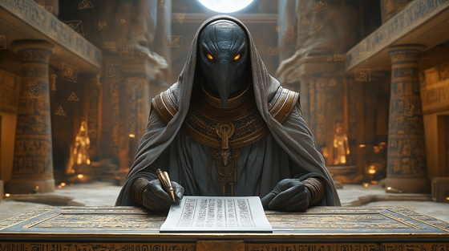

Enter the cosmic library of Thoth, Egypt’s divine scribe and master of sacred knowledge. This progressive metal tribute is a layered and luminous ode to the god who spoke the world into structure, measured time, and recorded the fate of gods and men.
Who is Thoth?
Thoth (Djehuty) is the ibis-headed god of writing, wisdom, mathematics, the moon, and divine order. He is credited with inventing language and hieroglyphs, and he served as the scribe of the gods, recording every soul’s trial and every divine decree. He also played a critical role in the weighing of the heart, standing beside Anubis to transcribe each soul’s fate.
Thoth was seen as a mediator between forces — between life and death, truth and illusion, order and chaos. His emblem is the ibis, and sometimes the moon, as he governed the calendar and the tides of time.
Thoth: The Infinite Script
Ink and stars upon the scroll
I write the world, I shape the soul
The first to speak, the first to know
Through word and wisdom, life shall grow
The scribe unseen, the feather’s friend
I mark the start, I trace the end
Each law inscribed in sacred flame
Each name recorded, none the same
No throne I seek, no war I wage
But time obeys my written page
I am Thoth — eternal pen
The voice before the gods began
I am the law behind the lie
The script that binds the earth and sky
In every word, a world I give
And in the truth, all things shall live
With moonlit ink and ibis gaze
I count the stars, I set their phase
I speak the spells that mend or break
I hold the fate the gods dare make
Through every rite, my name is known
Through every oath, my power’s sown
I weigh the word as others war
For minds endure when spears are torn
No throne I seek, no war I wage
But time obeys my written page
I am Thoth — eternal pen
The voice before the gods began
I am the law behind the lie
The script that binds the earth and sky
In every word, a world I give
And in the truth, all things shall live
The scroll unwinds, the glyphs arise
The future hides in ancient lines
From temple wall to scholar's hand
My truth survives in every land
I guard the gates of dusk and dawn
Where dream and logic both belong
The ibis flies, the scribes will chant
And secrets bloom where minds enchant
No throne I seek, no war I wage
But time obeys my written page
I am Thoth — eternal pen
The voice before the gods began
I am the law behind the lie
The script that binds the earth and sky
In every word, a world I give
And in the truth, all things shall live
In every tongue, my shadow writes
In every code, I cast the light
The gods may speak, the kings may fall
But knowledge carves the final wall
So light the lamp, prepare the scroll
I write the fate, I name the soul
I am Thoth, and through my lore
The gods endure, and time restores